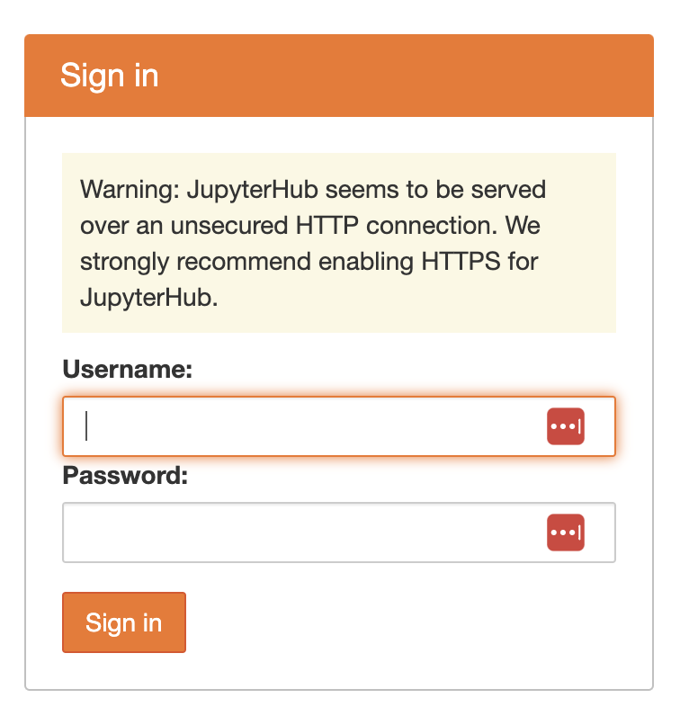

sudo firewall-cmd --permanent --add-port 80/tcp
sudo firewall-cmd --reload
sudo firewall-cmd --list-portsSet-up CentOS https
Securing our JupyterHub on our Centos server
Now that our basic JupyterHub is running, we want to secure it. We are going to use Let’s Encrypt. Prerequisites:
- We need to have set up a domain (URL) that points to the public IP of our JupyterHub
- We need to ssh into our server and have
sudoaccess - We need to open port 80 (temporarily)
References:
- https://professorkazarinoff.github.io/jupyterhub-ENGR114-2019Q4/install_jupyterhub/ This is a similar JupyterHub installation
- https://leangaurav.medium.com/simplest-https-setup-nginx-reverse-proxy-letsencrypt-ssl-certificate-aws-cloud-docker-4b74569b3c61
- https://certbot.eff.org/instructions?ws=other&os=centosrhel8
Create a domain name
Find a domain name provider and set one up. It is not expensive. I used GoDaddy. You only need one. Later you can use it for multiple hubs using subdomains where are created by the next step (DNS entry). For example, let’s say you get the domain bluemountain123.live. You can have as many subdomains as you want and they will be subdomain.bluemountain123.live.
Create a DNS entry
Let’s pretend you set up bluemountain123.live as the domain. Go to the DNS settings for your domain. Add a type A record. This will do 2 things. First this will create the subdomain that you will use to access your JupyterHub. So let’s say you create, dhub as the type A DNS entry. Put dhub in the name and the public IP address of the server (leaving off :8000) in the value section. Then dhub.bluemountain123.live will be the url.

Test if the url is working
http://dhub.bluemountain123.live:8000 would be the url using the example domain above. Test that it is working (shows a JupyterHub login) before moving on. This is what you should see:

Prep the server
Open port 80
This is the default port for http and certbot is going to spin up a temporary webserver on this port and get the SSL certificates. We will close this port when we are done.
- Go to the Azure dashboard (Networking section) for your CentOS server and make sure port 80 is open.
- Check that the firewall is not blocking port 80:
sudo firewall-cmd --list-ports. If 80 is not listed, we need to add it and reload:
Stop our JupyterHub
sudo systemctl start jupyterhub.serviceInstall certbot
Per Let’s Encrypt recommendations, we will use certbot to get our SSL certificates. https://certbot.eff.org/.
Here are the instructions for certbot on CentOS 8: https://certbot.eff.org/instructions?ws=other&os=centosrhel8 We choose “other” as the software.
Update the CentOS repos
I am using an End-of-Life CentOS distribution (sigh), and the repositories have been archived. This solution worked.
dnf --disablerepo '*' --enablerepo=extras swap centos-linux-repos centos-stream-repos
dnf distro-syncNote the last line, suggesting updating a bunch of packages and I said NO to that.
Install snap
Per instructions here: https://snapcraft.io/docs/installing-snap-on-centos This updated some SELinux packages, which seemed a bit alarming but nothing seemed to break.
sudo yum install snapd
sudo systemctl enable --now snapd.socket
sudo ln -s /var/lib/snapd/snap /snapInstall certbot
I had to run this twice. First time it complained.
sudo snap install --classic certbot
sudo ln -s /snap/bin/certbot /usr/bin/certbotCreate the SSL certs.
Have certbot create the SSL certs by spinning up a temporary webserver listening on port 80. Per instructions on the certbot website.
sudo certbot certonly --standaloneIt’ll ask for your email and the URL of your website. In my toy example, I created the domain dhub.bluemountain123.live.
SSL cert renewal
With certbot running, the certificates should auto renew, but I haven’t tested this.
Update the JupyterHub config file
Edit with something like
cd /opt/miniconda3/envs/jupyterhub/etc/jupyterhub/
nano jupyterhub_config.pyThen add this to the config file. The port that is configured for SSL by default is 443. https is not going to work on 8000 which we had configured for http (on Azure).
c.JupyterHub.port = 443
c.JupyterHub.ssl_key = '/etc/letsencrypt/live/dhub.bluemountain123.live/privkey.pem'
c.JupyterHub.ssl_cert = '/etc/letsencrypt/live/dhub.bluemountain123.live/fullchain.pem'Restart and Test
We need to open 443 in the firewall, and we can close 80 and 8000 now.
sudo firewall-cmd --permanent --add-port 443/tcp
sudo firewall-cmd --permanent --remove-port=80/tcp
sudo firewall-cmd --permanent --remove-port=8000/tcp
sudo firewall-cmd --reload
sudo firewall-cmd --list-portsNext we restart our JupyterHub service.
sudo systemctl start jupyterhub.serviceTry https://dhub.bluemountain123.live and you should see the JupyterHub login without the http warning.